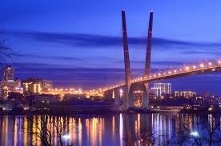
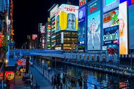
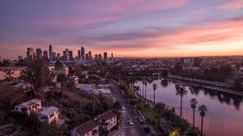

블라디보스톡

원래라면 올해 2월16일에 블라디보스톡을 갈 예정이었지만
코로나19 때문에 가지못하고 예약한것들 환불도 받지 못한 채 돈만날린
아픈기억을 가진 여행지이다. 러시아답게 킹크랩이 유명하고 해상공원,아르바트 거리 등
몇몇 구경할 거리가 있지만 관광할게 많지는 않은 그런 여행지이다.
기회가 된다면 가보고 싶은 여행지이다.
오사카

고등학교 2학년때 여행을 갔던 일본의 도시이다. 일본의 식탁이라 불리는 오사카 답게
먹을게 많이 있었고 건물위에 관람차나 하늘공원 등 관광요소도 충분히 많았던 도시이다.
3박4일 잡고 가기에 좋았고, 지하철이 잘 연결되어 있어 이동하는데에도 큰 문제가 없었다.
일본은 택시비가 비싸다는 얘기를 듣고 길을 잃으면 어쩌지 싶었지만, 네이버 블로그, 카페 등
목적지까지 오고 가는 방법들이 많이 올라와 있어 큰 어려움 또한 없었다.
LA

중학교 2학년때 살면서 처음 가본 해외여행이라 기억에 많이 남는다. 한인타운에서 봤던
많은 한국어 간판을 해외에서 보니 매우 반가웠었고, 유니버셜 스튜디오에서 여러 놀이기구를
타고 놀며 사진찍고 다녔던 기억이 난다. 패키지 여행으로 갔었기에 버스를 타고다녀 교통에
큰 불편함이 없었고, 음식또한 생각보다 나와 잘 맞았다.